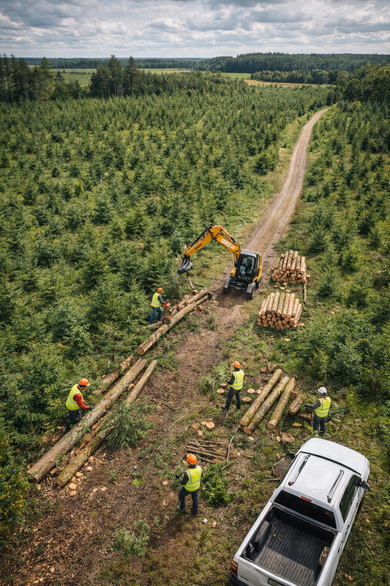
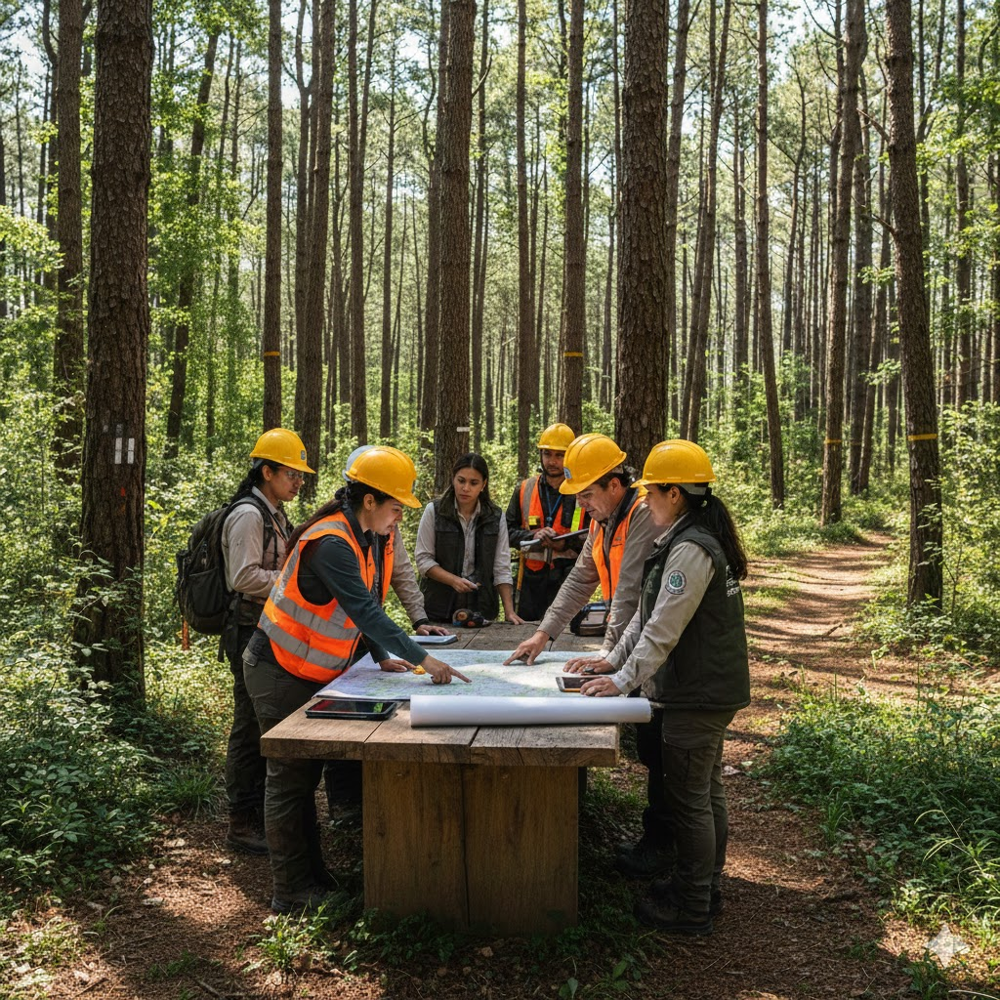

Nuestros Servicios
Soluciones forestales integrales para el desarrollo sustentable y la gestión responsable de recursos.

Trabajo de Campo
- ✔ Proyectos de manejo forestal
- ✔ Preparación de sitios y rehabilitación
- ✔ Operación de maquinaria especializada

Consultoría Ambiental
- ✔ Asesoría en impacto ambiental
- ✔ Planes de manejo sostenible
- ✔ Capacitaciones y auditorías